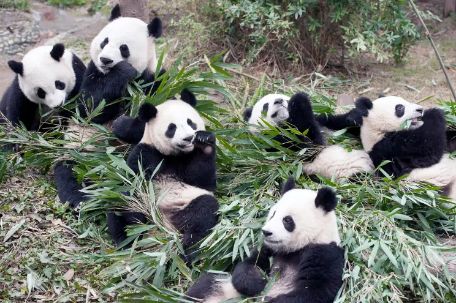
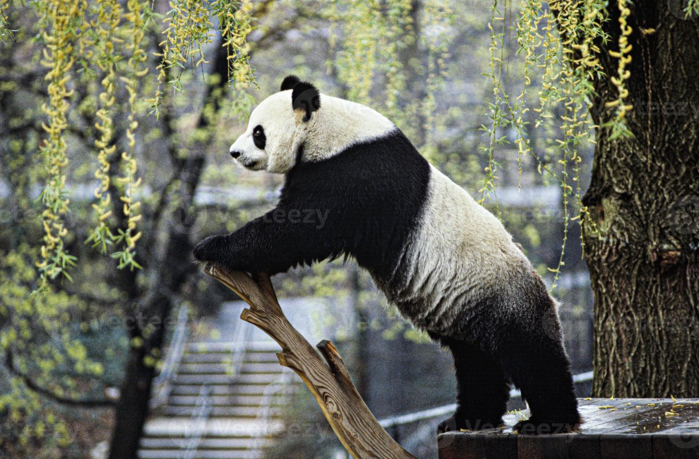

A pesar del número de ejemplares limitado y de las reducidas zonas donde habita, es uno de los animales más reconocibles de todos los rincones del mundo. Durante larga tiempo estuvo en grave riesgo de extinción y se convirtió el símbolo del Fondo Mundial para la Naturaleza. Actualmente la cantidad ejemplares en libertad está en aumento.
Dia internacional de los Pandas: 27 de octubre
Nombre cientifico: Ailuropoda melanoleuca



Informacion Osos Pandas
Imagenes Osos Pandas
Curiosidades del oso panda